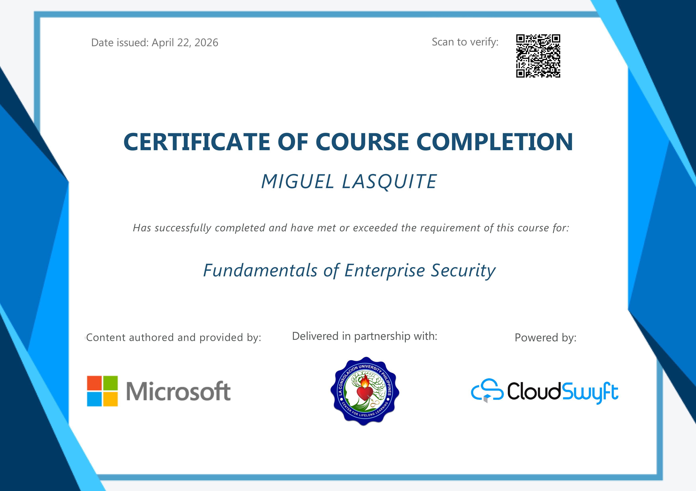
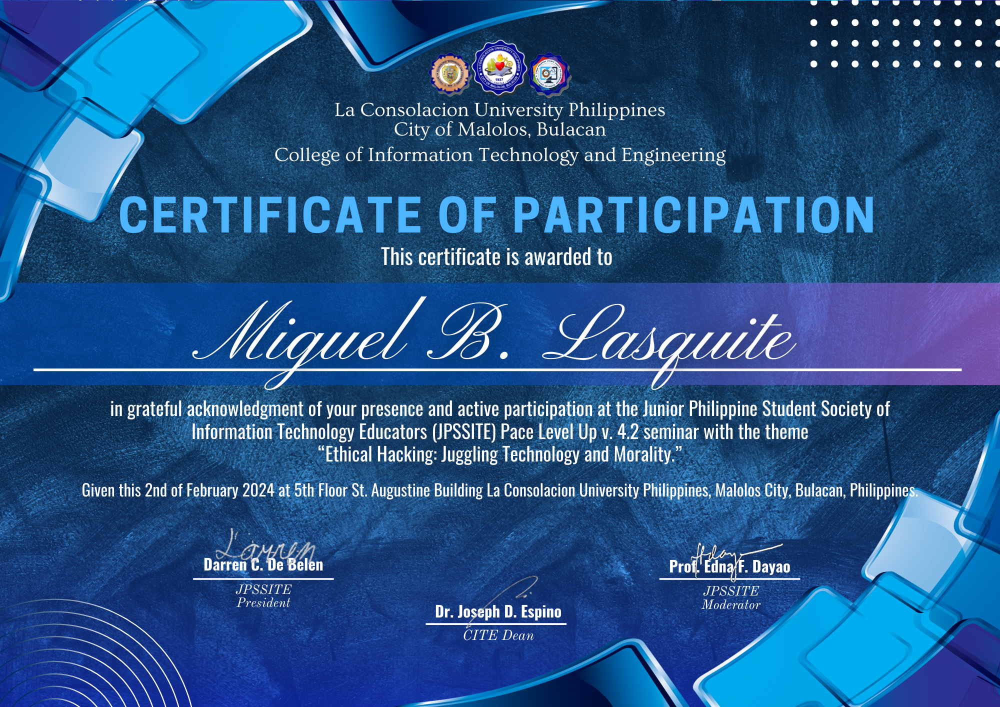
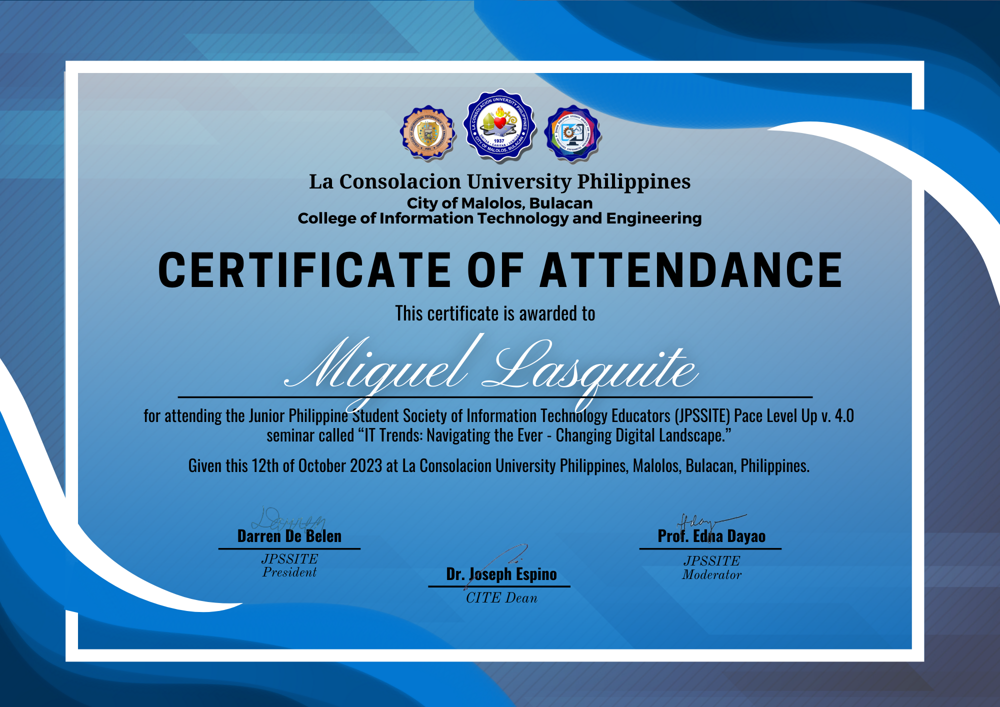

Web Development
Building structured and responsive pages.
BSIT STUDENT · ASPIRING DEVELOPER
I’m an Information Technology student who enjoys learning how technology works and building useful, user-friendly applications.
01 / ABOUT ME
I am an Information Technology student at La Consolacion University of the Philippines. I am developing my skills in programming, web development, databases, and problem-solving.
I enjoy exploring new tools, working on school projects, and turning ideas into practical digital solutions. My goal is to keep improving as a developer and gain experience through real projects.
02 / WHAT I DO
Skills I have practiced through coursework and personal projects. Update these to match your actual experience.
Building structured and responsive pages.
Writing code and solving programming tasks.
Working with data storage and basic queries.
Using development tools for school projects.
03 / SELECTED WORK
A selection of academic projects and practical exercises.
A web-based activity monitoring dashboard concept for viewing university events, tasks, venue status, and utilities.
An Android application project focused on student accounts and organizing tasks and activities.
A computer vision project that detects faces through a webcam using a trained recognition model.
04 / MILESTONES
Certificate of Course Completion authored by Microsoft, delivered in partnership with La Consolacion University Philippines, and powered by CloudSwyft[cite: 2].

Earned Microsoft Office Specialist Expert certification demonstrating advanced proficiency in database design, management, and reporting using Microsoft Access[cite: 5].
Earned Microsoft Office Specialist Associate certification validating core skills in spreadsheet modeling, formulas, data analysis, and visualization in Microsoft Excel[cite: 6].
Certificate of Participation for the seminar “Ethical Hacking: Juggling Technology and Morality” hosted by the College of Information Technology and Engineering, La Consolacion University Philippines[cite: 4].

Certificate of Attendance for the seminar “IT Trends: Navigating the Ever-Changing Digital Landscape” hosted by the College of Information Technology and Engineering, La Consolacion University Philippines[cite: 3].

Learning new technologies and improving my development skills through coursework and projects.
05 / LET'S CONNECT
Feel free to reach out. I’d be happy to connect, learn, and collaborate.
lasquitebalverde@gmail.com ↗